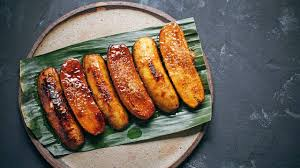

Ingredients
- 8-10 ripe saba bananas
- 1 cup brown sugar
- 2 cups cooking oil
- Wooden skewers (optional)
Instructions
- Peeling and Frying: Peel the saba bananas and set them aside. In a large pan or wok, heat the cooking oil over medium heat.
- Frying the Bananas: Once the oil is hot, carefully add the bananas to the pan. Fry them until they start to turn a light golden brown, about 2-3 minutes.
- Caramelizing the Sugar: Sprinkle the brown sugar evenly over the bananas while they’re still frying. Continue to cook, stirring occasionally, until the sugar melts and coats the bananas, creating a caramelized glaze.
- Removing from Heat: Once the bananas are well-coated and caramelized, remove them from the pan using a slotted spoon. Place them on a plate lined with parchment paper or a cooling rack to let any excess oil drain off.
- Serving: If using wooden skewers, thread the caramelized bananas onto the skewers while they’re still warm. Let them cool slightly before serving.
